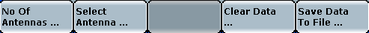

Antenna Configuration
Training mode and measurement mode share the basic WLAN input signal configuration (see "WLAN Input Signal Settings"). The antenna configuration is done via hotkeys.

This hotkey opens a popup that allows you to set the number of TX antennas in the MIMO signal to be recorded.
Remote command:This hotkey opens a popup that allows you to set the TX antenna signal to be recorded.
Note that there is no dedicated remote command for selecting the antenna without starting the training data. At the GUI, the antenna number is kept in memory until the training mode measurement is started.